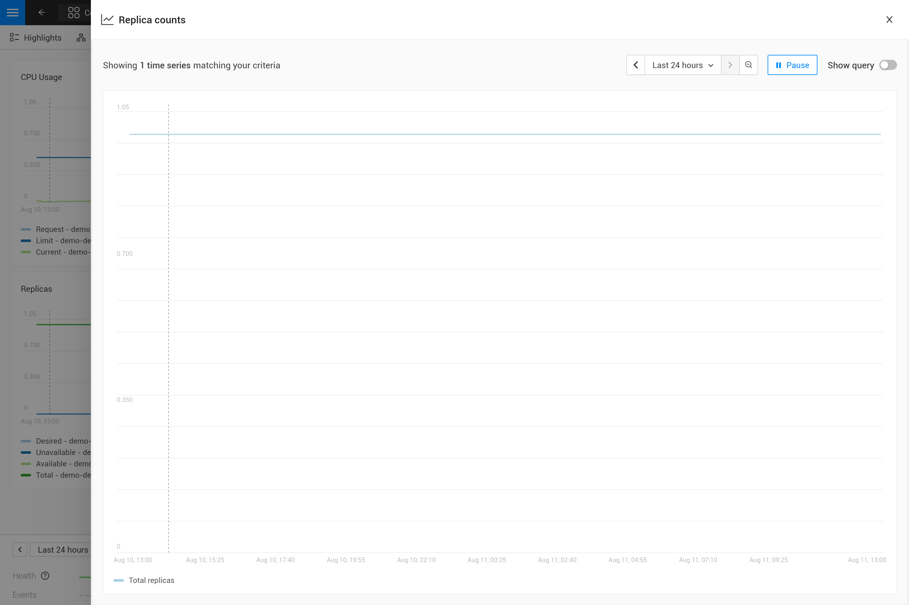

Ajoutez des graphiques personnalisés aux composants
Présentation
SUSE® Observability fournit déjà de nombreux graphiques de métriques par défaut sur la plupart des types de composants qui représentent des ressources Kubernetes. Des graphiques de métriques supplémentaires peuvent être ajoutés à tout ensemble de composants si nécessaire. Lors de l’ajout de métriques aux composants, il y a deux options :
-
Les métriques sont déjà collectées par SUSE® Observability mais ne sont pas visualisées sur un composant, par défaut
-
Les métriques ne sont pas encore collectées par SUSE® Observability et ne sont donc pas encore disponibles
Pour l’option 1, les étapes ci-dessous vous indiqueront comment créer une liaison de métrique qui configurera SUSE® Observability pour ajouter une métrique spécifique à un ensemble spécifique de composants.
Pour l’option 2, assurez-vous que les métriques sont disponibles dans SUSE® Observability en les envoyant à SUSE® Observability en utilisant le protocole d’écriture à distance Prometheus. Continuez en ajoutant des graphiques pour les métriques aux composants UNIQUEMENT après avoir vérifié que les métriques sont disponibles.
Création d’une liaison de métrique
À titre d’exemple, les étapes ajouteront une liaison de métrique pour le Replica counts des déploiements Kubernetes. Cette liaison de métrique existe déjà dans SUSE® Observability, par défaut.
Rédigez le plan de la liaison de métrique
Ouvrez le fichier YAML metricbindings.yaml dans votre éditeur de code préféré pour le modifier tout au long de ce guide. Vous pouvez utiliser la CLI pour Tester votre StackPack.
- _type: MetricBinding
chartType: line
enabled: true
identifier: urn:stackpack:my-stackpack:shared:metric-binding:node-memory-bytes-available-scheduling
layout:
metricPerspective:
section: Resources
tab: Kubernetes Node
name: Memory available for scheduling (Custom)
priority: medium
queries:
- alias: ${cluster_name} - ${node}
expression: max_over_time(kubernetes_state_node_memory_allocatable{cluster_name="${tags.cluster-name}", node="${name}"}[${__interval}])
scope: (label = "stackpack:kubernetes" and type = "node")
unit: bytes(IEC)
La section des requêtes et de la portée sera remplie dans les étapes suivantes. Notez que l’unité utilisée est short, qui rendra simplement une valeur numérique. Si vous n’êtes pas encore sûr de l’unité de la métrique, vous pouvez la laisser ouverte et décider de l’unité correcte lors de l’écriture de la requête PromQL.
Sélectionnez les composants à lier
Enregistrez une vue de la perspective de topologie et utilisez les filtres (Filtres → Topologie → Passer à STQL) pour interroger les composants qui doivent afficher la nouvelle métrique. Les champs les plus courants pour sélectionner la topologie pour les liaisons de métrique sont type pour le type de composant et label pour sélectionner toutes les étiquettes. Par exemple pour les déploiements :
type = "deployment" and label = "stackpack:kubernetes"
Le filtre de type sélectionne tous les déploiements, tandis que le filtre d’étiquette sélectionne uniquement les composants créés par le stackpack Kubernetes (le nom de l’étiquette est stackpack et la valeur de l’étiquette est kubernetes). Ce dernier peut également être omis pour obtenir le même résultat. Tous les Filtres de requête STQL pour les composants peuvent être utilisés pour le filtrage.
Passez en mode avancé pour copier la requête topologique résultante et la mettre dans le champ scope de la liaison de métrique.
|
Les liaisons de métrique ne prennent en charge que les filtres de requête. Les fonctions de requête comme |
Écrivez la requête PromQL
Allez à l’explorateur de métriques de votre SUSE® Observability instance, http://your-instance/#/metrics, et utilisez-le pour interroger la métrique d’intérêt. L’explorateur dispose de l’auto-complétion pour les métriques, les étiquettes, les valeurs d’étiquettes mais aussi pour les fonctions PromQL et les opérateurs pour vous aider. Commencez par une courte plage de temps de, par exemple, une heure pour obtenir les meilleurs résultats.
Pour le nombre total de réplicas, utilisez la métrique kubernetes_state_deployment_replicas. Pour afficher les graphiques de métriques des données de séries temporelles, étendez la requête pour effectuer une agrégation en utilisant le paramètre ${__interval} :
max_over_time(kubernetes_state_deployment_replicas[${__interval}])
Dans ce cas spécifique, utilisez max_over_time pour vous assurer que le graphique montre toujours le nombre le plus élevé de réplicas à tout moment. Pour des plages de temps plus longues, une courte baisse de réplicas n’est pas affichée. Pour mettre en évidence le nombre le plus bas de réplicas, utilisez plutôt min_over_time.
Copiez la requête dans la propriété expression de la première entrée du champ queries de la liaison de métrique. Utilisez Total replicas comme alias pour qu’il apparaisse dans la légende du graphique.
|
Dans SUSE® Observability, la taille du graphique de métriques détermine automatiquement la granularité de la métrique affichée dans le graphique. Les requêtes PromQL peuvent être ajustées pour tirer le meilleur parti de ce comportement afin d’obtenir un graphique représentatif de la métrique. Écrire PromQL pour les graphiques explique cela en détail. |
Liez la série temporelle correcte à chaque composant.
La liaison de métrique avec tous les champs remplis :
_type: MetricBinding
chartType: line
enabled: true
tags: {}
unit: short
name: Replica counts
priority: MEDIUM
identifier: urn:stackpack:my-stackpack:metric-binding:my-deployment-replica-counts
queries:
- expression: max_over_time(kubernetes_state_deployment_replicas[${__interval}])
alias: Total replicas
scope: type = "deployment" and label = "stackpack:kubernetes"
La création dans SUSE® Observability et la visualisation du graphique "Nombre de réplicas" sur un composant de déploiement donnent un résultat inattendu. Le graphique montre le nombre de réplicas pour tous les déploiements. Logiquement, on s’attendrait à n’avoir qu’une seule série temporelle : le nombre de réplicas pour ce déploiement spécifique.

Pour corriger cela, rendez la requête PromQL spécifique à un composant en utilisant les informations du composant. Filtrez sur suffisamment d’étiquettes de métrique pour sélectionner uniquement la série temporelle spécifique au composant. C’est la "liaison" de la série temporelle correcte au composant. Pour quiconque expérimenté dans la création de tableaux de bord Grafana, cela est similaire à un tableau de bord avec des paramètres utilisés dans les requêtes sur le tableau de bord. Changeons la requête dans la liaison de métrique pour cela :
max_over_time(kubernetes_state_deployment_replicas{cluster_name="${tags.cluster-name}", namespace="${tags.namespace}", deployment="${name}"}[${__interval}])

La requête PromQL filtre maintenant sur trois étiquettes, cluster_name, namespace et deployment. Au lieu de spécifier une valeur réelle pour ces étiquettes, une référence de variable aux champs du composant est utilisée. Dans ce cas, les étiquettes cluster-name et namespace sont utilisées, référencées à l’aide de ${tags.cluster-name} et ${tags.namespace}. De plus, le nom du composant est référencé avec ${name}.
Les références de variables prises en charge sont :
-
Toute étiquette de composant, en utilisant
${tags.<label-name>} -
Le nom du composant, en utilisant
${name}

|
Le nom du cluster, l’espace de noms et une combinaison du type et du nom du composant sont généralement suffisants pour sélectionner les métriques d’un composant spécifique dans Kubernetes. Ces étiquettes, ou des étiquettes similaires, sont généralement disponibles sur la plupart des métriques et des composants. |
Avancé
Plus d’une série temporelle dans un graphique
|
Il n’y a qu’une seule unité pour une liaison de métrique (elle est tracée sur l’axe des ordonnées du graphique). En conséquence, vous ne devez combiner que des requêtes qui produisent des séries temporelles avec la même unité dans une seule liaison de métrique. Parfois, il peut être possible de convertir l’unité. Par exemple, l’utilisation du CPU peut être rapportée en milli-cœurs ou en cœurs, les milli-cœurs peuvent être convertis en cœurs en multipliant par 1000 comme ceci |
Il existe deux façons d’obtenir plus d’une série temporelle dans une seule liaison de métrique et donc dans un seul graphique :
-
Écrire une requête PromQL qui renvoie plusieurs séries temporelles pour un seul composant
-
Ajouter plus de requêtes PromQL à la liaison de métrique
Pour la première option, un exemple est donné dans la section suivante. La deuxième option peut être utile pour comparer des métriques liées. Quelques cas d’utilisation typiques :
-
Comparer le nombre total de réplicas par rapport aux réplicas souhaités et disponibles
-
Utilisation des ressources : limites, demandes et utilisation dans un seul graphique
Pour ajouter plus de requêtes à une liaison de métrique, il suffit de répéter les étapes 3. et 4. et d’ajouter la requête comme une entrée supplémentaire dans la liste des requêtes. Pour les comptes de réplicas de déploiement, il existe plusieurs métriques liées qui peuvent être incluses dans le même graphique :
- _type: MetricBinding
chartType: line
enabled: true
tags: {}
unit: short
name: Replica counts
priority: MEDIUM
identifier: urn:stackpack:my-stackpack:metric-binding:my-deployment-replica-counts
queries:
- expression: max_over_time(kubernetes_state_deployment_replicas{cluster_name="${tags.cluster-name}", namespace="${tags.namespace}", deployment="${name}"}[${__interval}])
alias: Total replicas
- expression: max_over_time(kubernetes_state_deployment_replicas_available{cluster_name="${tags.cluster-name}", namespace="${tags.namespace}", deployment="${name}"}[${__interval}])
alias: Available - ${cluster_name} - ${namespace} - ${deployment}
- expression: max_over_time(kubernetes_state_deployment_replicas_unavailable{cluster_name="${tags.cluster-name}", namespace="${tags.namespace}", deployment="${name}"}[${__interval}])
alias: Unavailable - ${cluster_name} - ${namespace} - ${deployment}
- expression: min_over_time(kubernetes_state_deployment_replicas_desired{cluster_name="${tags.cluster-name}", namespace="${tags.namespace}", deployment="${name}"}[${__interval}])
alias: Desired - ${cluster_name} - ${namespace} - ${deployment}
scope: type = "deployment" and label = "stackpack:kubernetes"

Utiliser des étiquettes métriques dans des alias
Lorsqu’une seule requête renvoie plusieurs séries temporelles par composant, cela apparaîtra sous forme de plusieurs lignes dans le graphique. Mais dans la légende, elles utiliseront toutes le même alias. Pour pouvoir voir la différence entre les différentes séries temporelles, l’alias peut inclure des références aux étiquettes de métrique en utilisant la syntaxe ${label}. Par exemple, voici une liaison de métrique pour la métrique "Redémarrages de conteneur" sur un pod, notez qu’un pod peut avoir plusieurs conteneurs :
type: MetricBinding
chartType: line
enabled: true
id: -1
identifier: urn:stackpack:my-stackpack:metric-binding:my-pod-restart-count
name: Container restarts
priority: MEDIUM
queries:
- alias: Restarts - ${container}
expression: max by (cluster_name, namespace, pod_name, container) (kubernetes_state_container_restarts{cluster_name="${tags.cluster-name}", namespace="${tags.namespace}", pod_name="${name}"})
scope: (label = "stackpack:kubernetes" and type = "pod")
unit: short
Notez que le alias fait référence à l’étiquette container de la métrique. Assurez-vous que l’étiquette est présente dans le résultat de la requête, lorsque l’étiquette est manquante, le ${container} sera rendu comme du texte littéral pour aider au dépannage.
Dispositions
Chaque composant peut être associé à diverses technologies ou protocoles tels que k8s, mise en réseau, environnements d’exécution (par exemple, JVM), protocoles (HTTP, AMQP), etc.
Par conséquent, une multitude de métriques différentes peuvent être affichées pour chaque composant. Pour une meilleure lisibilité, SUSE® Observability peut organiser ces graphiques en onglets et sections.
Pour afficher un graphique (MetricBinding) dans un onglet ou une section spécifique, vous devez configurer la propriété de mise en page.
Tout MetricsBinding sans mise en page spécifiée sera affiché dans un onglet et une section nommés Other.
Voici un exemple de configuration :